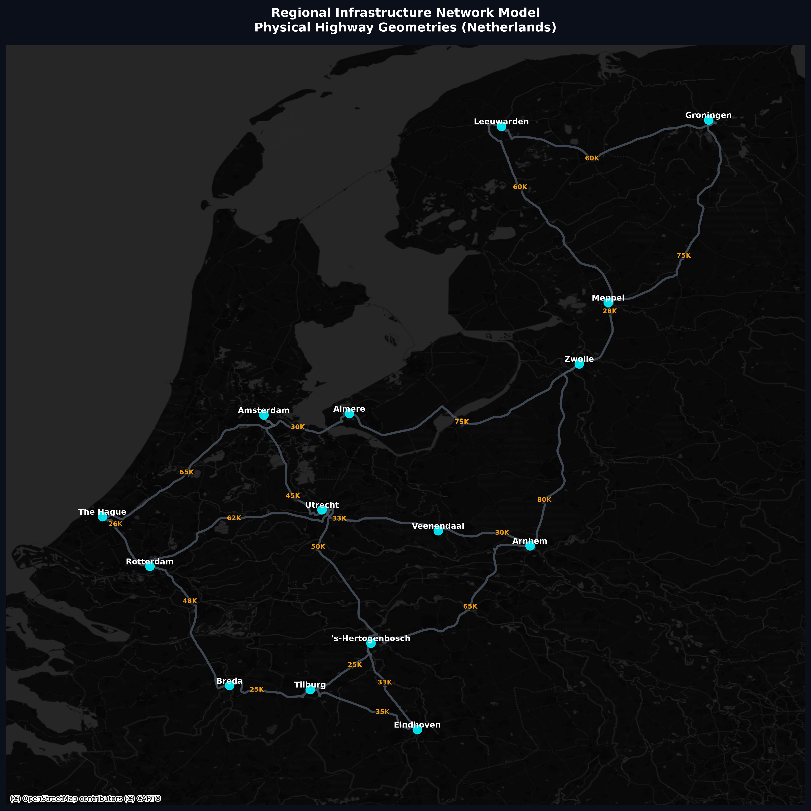
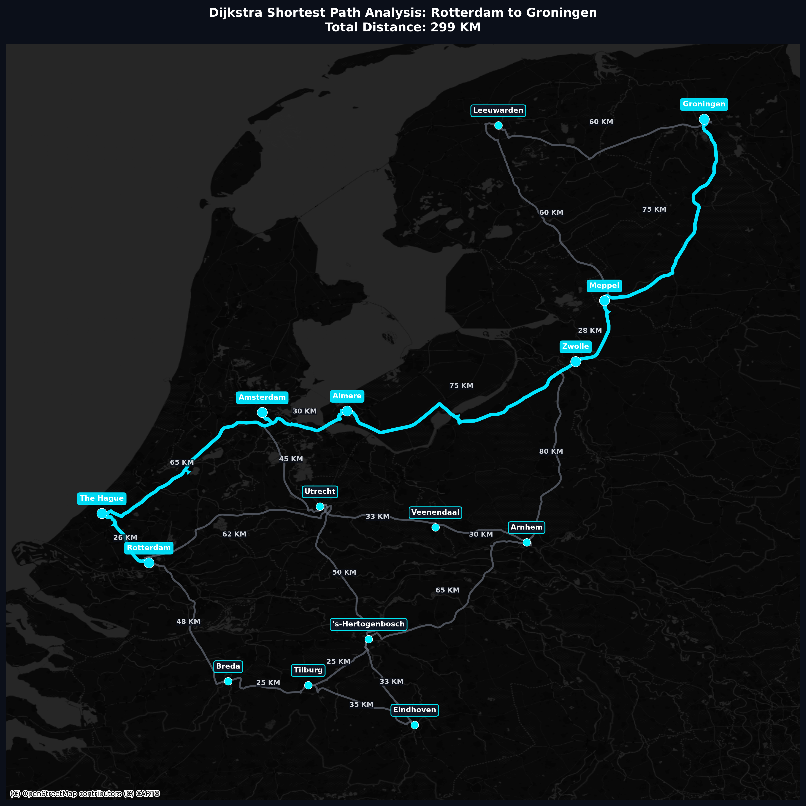

Graph Theory: Shortest Distance Problem
Course: Discrete Structure (BIK10603)
Lecturer: Dr. Nurezayana Binti Zainal
Group Members
MD JOWEL
AI250004AHMED NASHWAN AHMED AL-MASWARY
AI250001ANAS AWSAN ABDULRAZZAQ MUSAED SALLAM
AI250036AHMED HAIL SAGHEER AHMED AL-WESABI
AI250034DIPTO HOWLADER
AI250002Introduction
Applying discrete mathematics to model and solve optimization problems in logistics and routing.
- Graph Theory Application: Modeling real-world connectivity, bottlenecks, and routes.
- Core Focus: Finding the absolute shortest path using algorithmic computation.
- Scenario Study: The Dutch national transportation network modeled as a complex graph.
- Modern Execution: Implemented dynamically in Python for automated pathfinding operations.
Dutch Transportation Case Study
We modeled 15 prominent Dutch cities and their connecting high-speed highways as vertices and weighted edges to calculate optimal travel configurations.
Project Objectives
Graph Modeling
Represent Dutch cities as graph vertices (nodes) and high-speed highways as weighted edges with physical distances in kilometers.
Graph Theory Analysis
Analyze structural properties of the network including graph connectivity, vertex degrees, and directed path characteristics.
Algorithm Implementation
Build a manual, clear step-by-step Dijkstra's shortest path algorithm implementation in Python without third-party solver dependencies.
Route Visualization
Visualize the resulting graph structure, coordinates, and shortest path using Matplotlib mapping and Contextily satellite map overlays.
Problem Background
- Logistics Inefficiencies: Cargo vehicles often rely on non-optimal, static routing paths leading to delays.
- Resource Drain: Lack of mathematical routing leads to increased fuel consumption, higher operational costs, and excessive carbon emissions.
- The Network Solution: Graph theory maps raw geographical coordinates into mathematically solvable networks.
"Computer science is no more about computers than astronomy is about telescopes."
— Edsger W. Dijkstra (1959 Shortest Path Founder)Without Algorithmic Paths
Manual heuristic search in dense transport structures triggers exponential search times and guarantees non-optimal solutions, increasing cost matrices by up to 25% on long-haul routes.
Methodology
The Graph Network Model
We built a Directed Graph representing the highway infrastructure connecting urban hubs across the Netherlands.
Dijkstra Path Relaxation
Systematically relaxes connections starting from the source, tracking tentative minimum weights in a priority array until the destination node is finalized.

Software Implementation
infrastructure.py Compiler
Maps geographical city coordinate structures, connects directly to OSRM APIs to download authentic highway geometries, and compiles the physical topology to a .graphml layout database.
solver.py Path Solver
Features our custom Dijkstra loop executing weight updates and path back-pointer extraction. Integrates with contextily dark satellite base maps for rich graphics rendering.
# Manual Dijkstra Implementation Loop
def get_shortest_path_manual(graph, start, end):
distances = {node: float('inf') for node in graph.nodes()}
distances[start] = 0
previous = {node: None for node in graph.nodes()}
unvisited = list(graph.nodes())
while unvisited:
# Select node with minimum tentative distance
current = min(unvisited, key=lambda n: distances[n])
if distances[current] == float('inf'): break
if current == end: break
unvisited.remove(current)
for neighbor in graph.neighbors(current):
weight = graph[current][neighbor]['weight']
new_dist = distances[current] + weight
if new_dist < distances[neighbor]:
distances[neighbor] = new_dist
previous[neighbor] = current
return path, distanceResults & Optimal Path

Dijkstra Step-by-Step Execution
Interactive walk-through of the relaxation loop from Rotterdam to Groningen.
Conclusion
- Academic Synthesis: Effectively demonstrated how discrete mathematical models resolve complex engineering problems in ICT.
- Theory to Application: Consolidated understanding of nodes (hubs), weighted edges (distances), graph connectivity, and degree metrics.
- Efficiency Benefits: Dijkstra algorithm design directly optimizes logistics, reducing travel time, fuel burn, and fleet overhead.
- Future Integrations: Bridges the gap between discrete structural theories and practical global navigation systems (like GPS or OSRM).